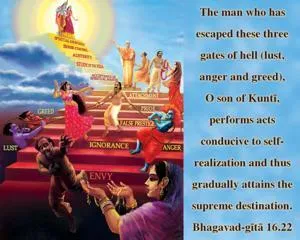

The man who has escaped these three gates of hell, O son of Kuntī, performs acts conducive to self-realization and thus gradually attains the supreme destination.

One should be very careful of these three enemies to human life: lust, anger and greed. The more a person is freed from lust, anger and greed, the more his existence becomes pure. Then he can follow the rules and regulations enjoined in the Vedic literature. By following the regulative principles of human life, one gradually raises himself to the platform of spiritual realization. If one is so fortunate, by such practice, to rise to the platform of Kṛṣṇa consciousness, then success is guaranteed for him. In the Vedic literature, the ways of action and reaction are prescribed to enable one to come to the stage of purification. The whole method is based on giving up lust, greed and anger. By cultivating knowledge of this process, one can be elevated to the highest position of self-realization; this self-realization is perfected in devotional service. In that devotional service, the liberation of the conditioned soul is guaranteed. Therefore, according to the Vedic system, there are instituted the four orders of life and the four statuses of life, called the caste system and the spiritual order system. There are different rules and regulations for different castes or divisions of society, and if a person is able to follow them, he will be automatically raised to the highest platform of spiritual realization. Then he can have liberation without a doubt.